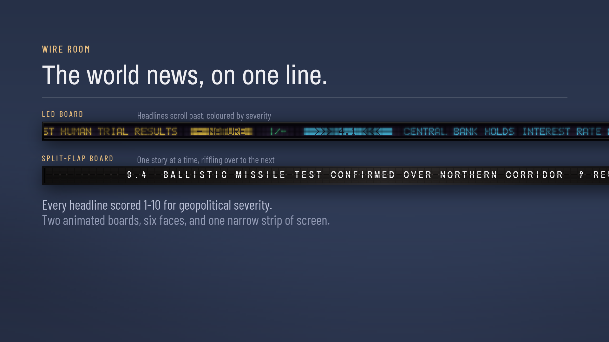
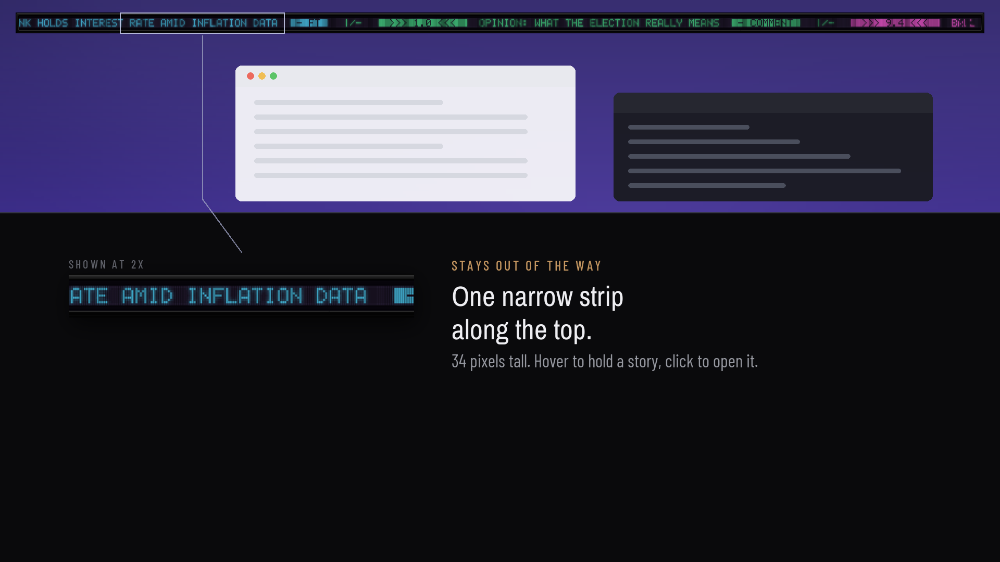
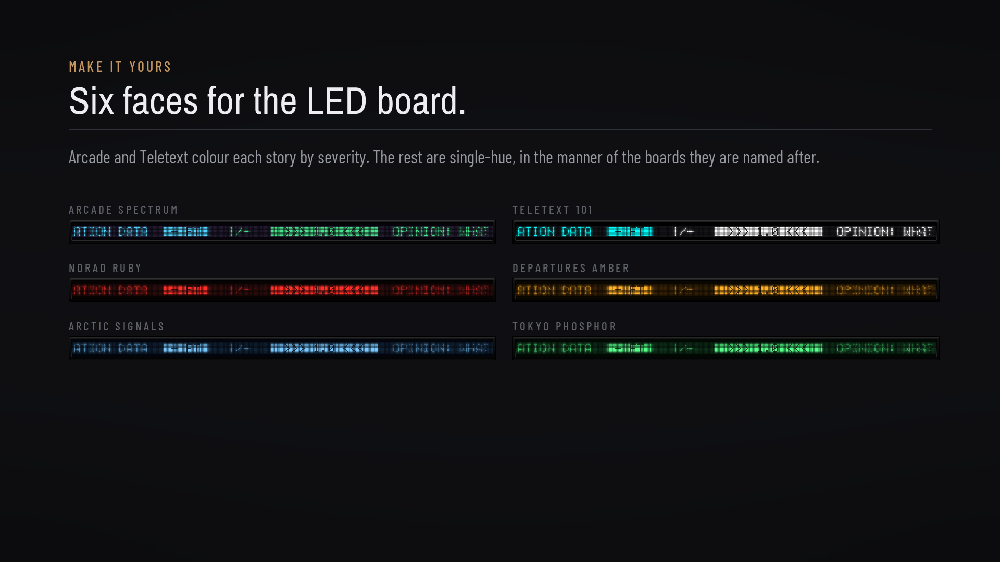

A thin strip along the top of your screen that shows the RSS feeds you choose. Every headline scored 1–10 for how much it actually matters, so you can set a floor and let the rest go past. On a quiet day the board is quiet.
Wire Room arrives empty and fetches nothing until you add a source. Right-click the board and choose Preferences. Under Wire Sources, paste an address, give it a short label and press Add.
https://feeds.bbci.co.uk/news/world/rss.xml https://www.theguardian.com/world/rss https://www.aljazeera.com/xml/rss/all.xml https://www.france24.com/en/rss https://rss.dw.com/xml/rss-en-world https://www.euronews.com/rss https://feeds.skynews.com/feeds/rss/world.xml https://feeds.npr.org/1001/rss.xml https://www.cnbc.com/id/100003114/device/rss/rss.html https://www.economist.com/latest/rss.xml https://www.defensenews.com/arc/outboundfeeds/rss/ https://www.bellingcat.com/feed/ Every address was checked and returning stories in October 2026. They are listed because they are well known and freely published; Wire Room has no relationship with any of them, and you are responsible for complying with each publisher’s terms of use. Feeds move — if one stops working, look it up on the publisher’s own site. Two or three you trust make a better board than all twelve. Finding feeds for other sites, and what to do if nothing appears.
A central bank holding rates and a missile test are not the same event. Each headline is scored against named trigger phrases — a local model, not a language model, so every score can be explained — and you set the floor beneath which nothing reaches the board.
On the LED board those bands are the colours themselves, so escalation reads across a room without the number needing to be legible.



Wire Room ships with no feeds. It is a reader, not a publisher: you add the RSS or Atom feeds you already follow, which takes about a minute, and nothing is fetched until you do.
If you want a news app that arrives full of somebody else’s choices, this is not that.
There is also an optional markets panel at the end of the board — gold, Brent, European gas, wheat, the S&P 500 — which works on first run with no account, or on free API keys of your own if you would rather be on something contractual. The trade-off is written on the control where you choose.